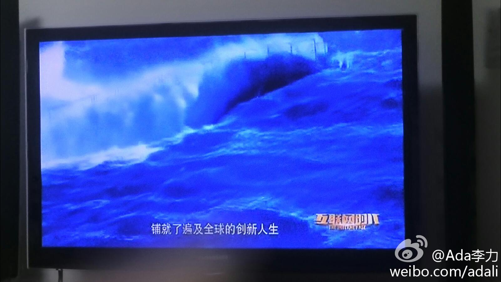

#读书#文化中很重要的一部分是参与：聚会，活动和演出。在这些地方，文化产生于人们在一起时的创作与分享。

Ada李力
2014-09-07


Ada李力
2014-09-07
@Ada李力:
中国人工现在贵到什么程度了呢？上周末听@晓丽Sherlly 说，她所在的中国部门已经开始从印度招程序员了。
Ada李力
2014-09-07
看春晚时，集体在微博上吐槽，也是一种“弹幕”。- 我现在在家只要开电视，就习惯性地拿出手机，想顺便记录下些东西，再看看是否跟其他人有互动。
Ada李力
2014-09-07
在看《互联网时代》，央视还真是擅长做叙事规模宏大的节目，只是我很久不看电视，竟有些不适应这种风格。只是不断出现的熟悉名词，会把我回到纪录片中。
- 